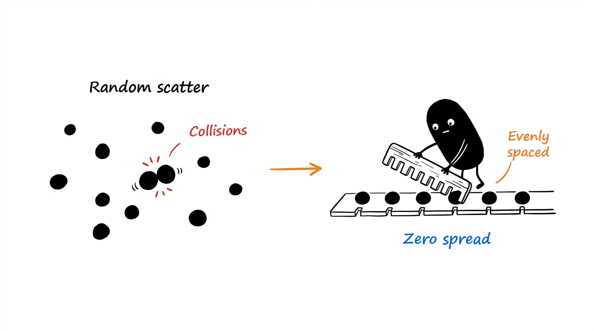

3. Zero-spread
GF(2)
lattice + Rust speed
Uniform distance [43..43] swept across 32,768 codewords.

Distance Spectrum
ZERO SPREAD [43..43]
d_GV=43
43
RNG [38..47]
55.94x
Rust Parallel Search Speedup
756.14 ms -> 13.52 ms (32,768 words)
64 KB
In-Browser WASM Core
llmw_wasm.wasm · BCH t = 27